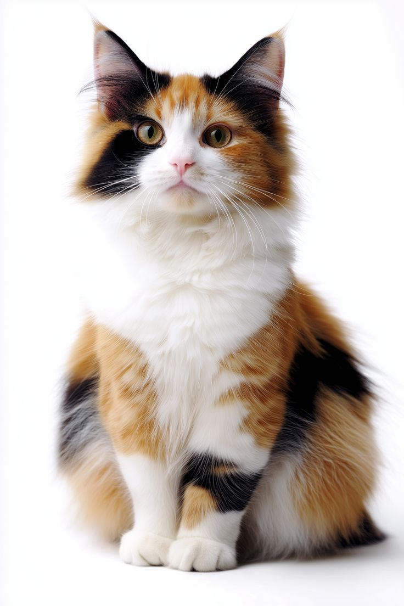
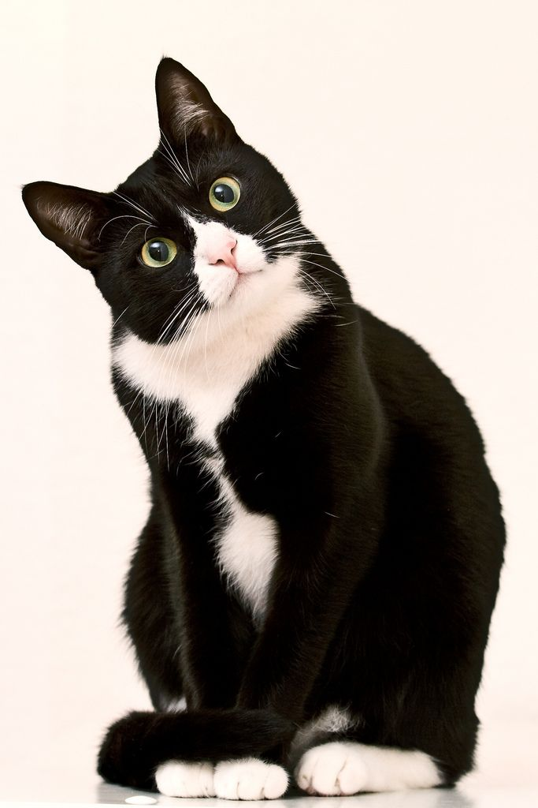
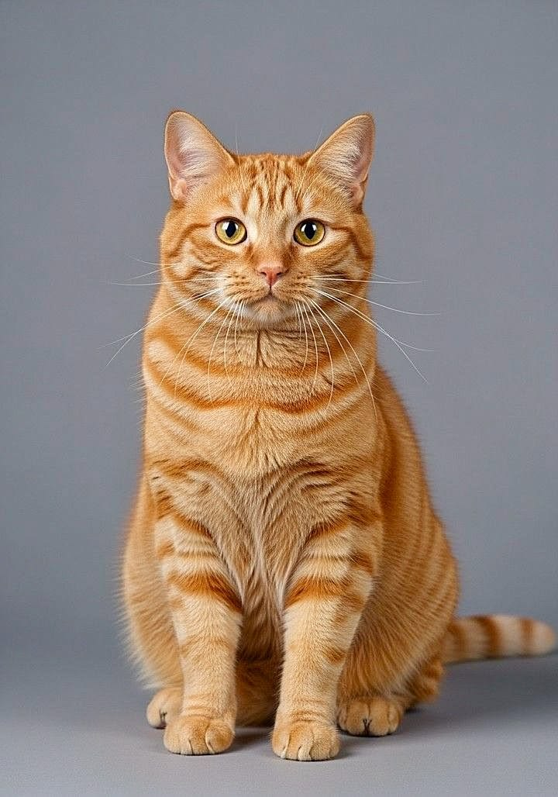

Rencontrez l'Équipage
Les trois mousquetaires du Repaire, chacun avec sa personnalité attachante. Venez les rencontrer pour un moment de ronrons et de tendresse.

Velours
Le luxe rétro incarné
Trouvé errant dans les ruelles du 11e, Velours s'est transformé en diva du Repaire. Ses ronrons mélodieux et son charme naturel en font l'ambassadeur princier de nos adoptions. Rêve d'une maison avec vue sur les toits de Paris.

Biscuit
Le petit gourmand turbulent
Biscuit a grandi sous les tables du dîner et considère chaque assiette comme une invitation personnelle. Plein de vie, de câlins imprévisibles et d'aventures, il transforme chaque jour en jeu. Un compagnon parfait pour ceux qui adorent l'énergie féline.

Moonlight
Le poète des toits parisiens
Moonlight a connu la liberté sauvage avant d'arriver au Repaire. Ses yeux profonds racontent mille histoires. Doux et pensif, il cherche une âme sœur qui comprenne ses silences éloquents et aime les nuits étoilées depuis une fenêtre douillette.